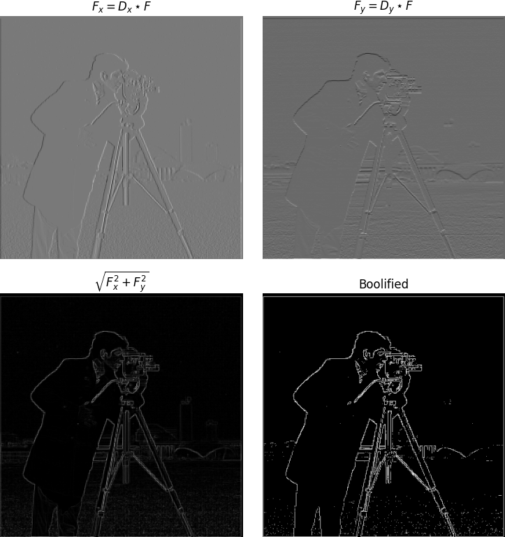

Filters
To identify the edges in an image, such as of the iconic cameraman photo, we can take the 2D matrix representation of the image and convolve it with the finite difference operators: $D_x = \begin{bmatrix}1 & -1\end{bmatrix},\ D_y = \begin{bmatrix}1 \\ -1\end{bmatrix}$. Since the left/right and top/bottom entries of these two operators are opposite, this acts as a filter to detect edges (change in brightness) along the $y$ and $x$ axis respectively.
With this, we can square the entries of these two partials, sum them, and take the square root to obtain the magnitude of the gradient at each pixel. To explicitly define the edges, we take every value above a threshold to 1 and everything else to 0. This threshold is found through good ol trial-and-error and determines the 'boolified' image.
Gaussian Blurring
As we can see this works alright. The edges are present, but there's still a good amount of 'salt and pepper' noise scattered about the boolified image. One way to remedy this particular issue is to blur the original image with a 2D gaussian (a gaussian crossed with itself). This has the effect of taking a weighted average of the region of pixels around the current pixel, so our finite difference operators now have information about the surrounding $x$ and $y$ values.

Derivative of Gaussian (DoG)
Turns out that the order in which we apply these filter operators doesn't matter. That is, rather than convolving the OG image with a Gaussian first, we can convolve the Gaussian with $D_x, D_y$ beforehand to get a Derivative of Gaussian (DoG) filter. We can then use this filter and convolve it with the original image to get the exact same results as above.
Frequencies
Unsharp Masking
To go about 'sharpening' an image, we can pass it through a low-pass filter (such as the Gaussian blur from before) to remove all of the high frequencies. We can then subtract this low-pass filtered image from the original to obtain just the high frequencies. We can then add some portion, $\alpha$, of the high-frequency version back to the original image to get a sharpened image. This works because humans are more sensitive to high frequencies, and images with higher frequencies are perceived as sharper.

Hybrid Images
We can also exploit this property of our visual system to create hybrid images. This involves taking the low-pass filtered version of one image and the high-pass filtered version of the other. Aligning them and layering one on top of the other results in a hybrid image which appears different depending on how close/far away one is from it. This works because the low-pass filtered image will have the 'background' of the first image, while the high-pass filtered image will have the 'foreground' of the second image. One way to make this more distinct is to transform the high-pass image into a gray version before to ensure only the details (and not any of the colors) are present in the final hybrid image.
Below in the first row are the varying images used to compose the hybrids. The second row corresponds to the image above's log magnitude of it's Fourier transform so you can see how the low/high pass filer changes the image characteristics.

As we can see with the final result above, images with differing contours don't work out as well.
Gaussian and Laplacian Stacks
Alternatively to overlaying images, we can also create hybrid images by masking out a portion of one image and the inverse of that portion of the other. In the example below, we have a vertical mask diving the image equally into two halves.
Subsequently, we compute the Gaussian and Laplacian stack of these two masked images, as well as for the mask itself. The gaussian stacks of each are computed by convolving with a 2D gaussian with a kernel size exponentially proportional to the stack depth (going up to 5). The Laplacian stacks are then computed by subtracting the original image from its Gaussian counterpart. Supporting color simply requires the stacks for each of the three color channels.
Multiresolution Blending
With these stacks computed, to obtain the final blended image we take a weighted sum of the first and second images Laplacian stacks, $L_1, L_2$ respectively, with the Gaussian stack of the mask, $G_m$:
$$\sum_{i,j}^{m,n} G_R(i, j) \cdot L_1(i, j) + (1 - G_R(i, j)) \cdot L_2(i, j)$$This produces a nice, smooth blend along the mask seems between two images. As shown in the last example, we can have more creative, non-vertical masks-- in this case circular, with a strip for the ring.
As a whole, I enjoyed being able to develop some of the techniques that full-fledge image editors such as GIMP and Photoshop implement: it definitely has given me appreciation for how comparatively painless the process is in these programs. My favorite portion was manipulating the photos by their frequency content as it was interesting to see how the human visual system is able to perceive images in this way.